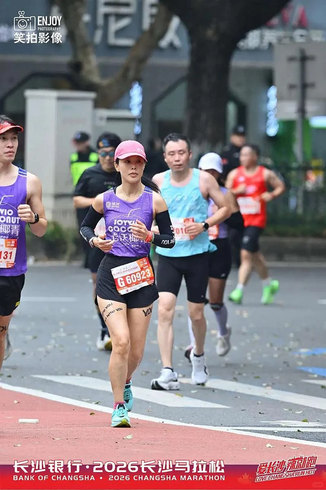
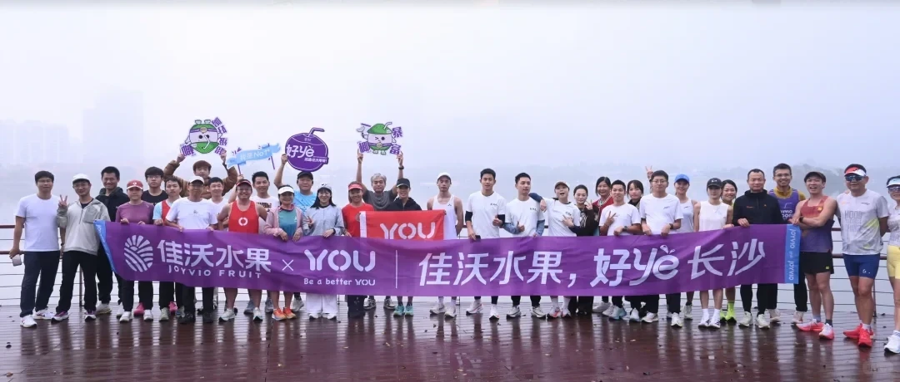
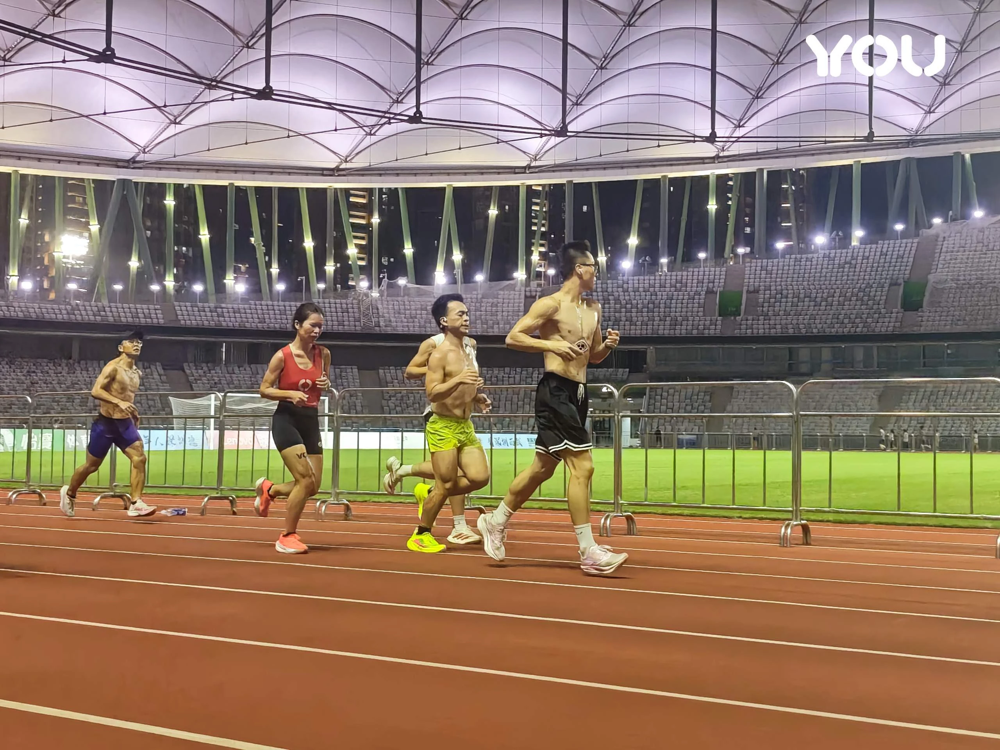
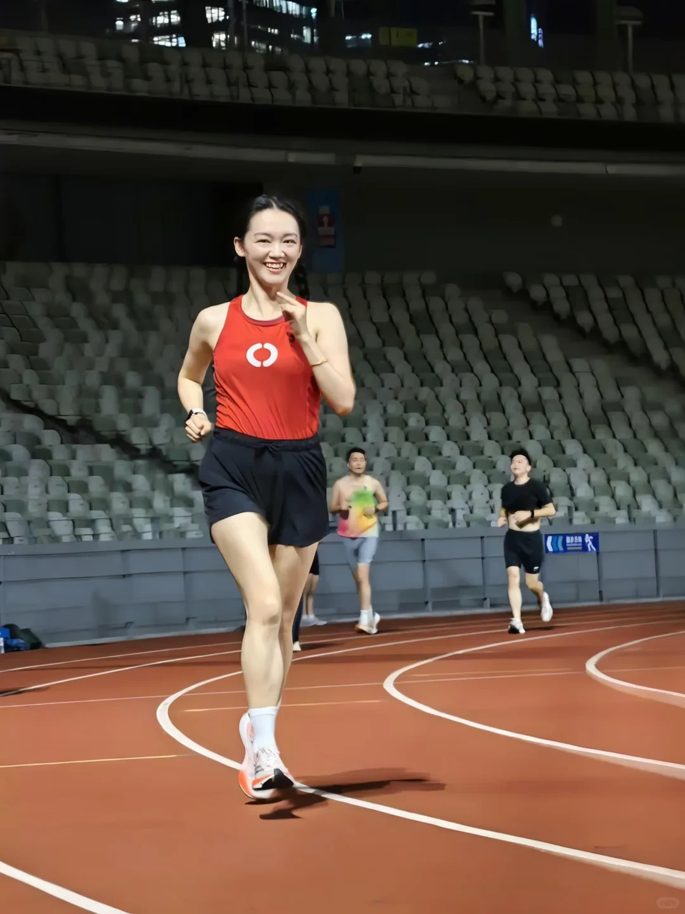
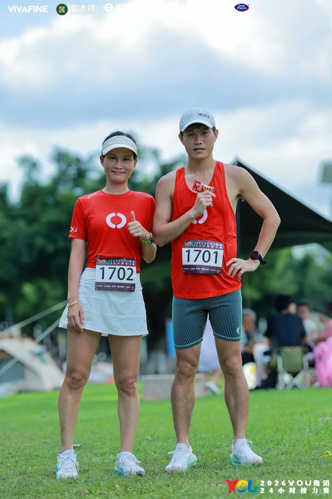
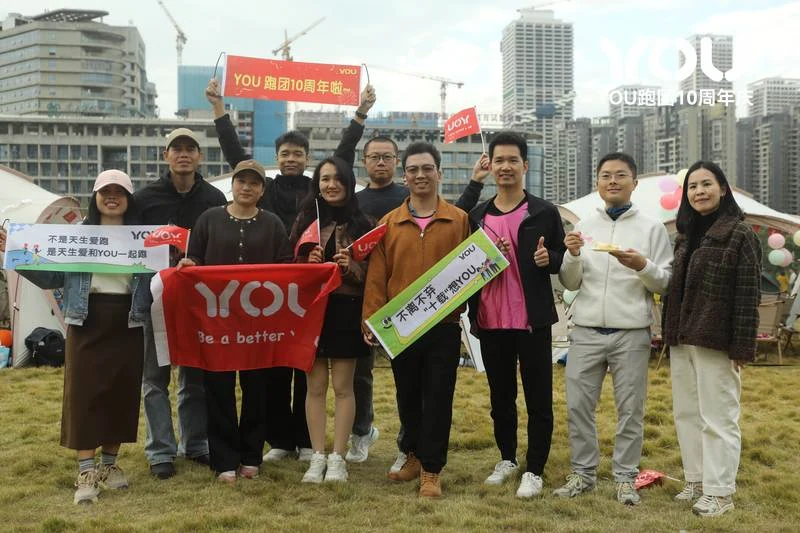

宝体例跑第529期：赛道之外，也有YOU
11月18日的宝体例跑帖，带回长沙早餐跑、长沙与南昌马拉松的故事。从赛道、聚餐，再回到每周三的相聚。
阅读图文 ↗YOU 跑团 / 活动动态
品牌活动、跑团训练与赛事故事。按已知时间从新到旧浏览。
最新在前。月份依据活动、原帖或相册记录，并标明回顾与历史招募。
11月18日的宝体例跑帖，带回长沙早餐跑、长沙与南昌马拉松的故事。从赛道、聚餐，再回到每周三的相聚。
阅读图文 ↗
从赛前相聚到赛后合影，记录YOU跑团在2026长沙马拉松的参赛与补给。
阅读图文 ↗
近40位跑友在长沙西湖公园集合。热身、环湖跑、拉伸，接着转场早餐店，一起感受长沙的早晨。
阅读图文 ↗
场上测试，场边补给与助威，跑完聚餐复盘。YOU首届10K场地测试留下了完整的团练记忆。
阅读图文 ↗
在宝安体育场主场3号门集合，签到、热身、合影，再跟随强度课或慢跑，跑完认识新朋友。
阅读图文 ↗
回看一次塘朗山盘山公路拉练的招募安排：10K与20K两种选择，按能力安排爬坡。
阅读图文 ↗
男队331.2公里，女队268.2公里。从黄昏到次日傍晚，记下一场共同完成的接力。
阅读图文 ↗
户外遮阳棚下摆好了点心。一张张照片记录了跑友到场、合影和相聚的时刻。
阅读图文 ↗
跑友带着红色队旗和周年手牌，在草地上留下十周年合影。
阅读图文 ↗
红色年会背景板前，跑友三两成群拍照，留下跑道之外的合影。
阅读图文 ↗
跑友在户外相聚，挥动周年主题手牌，在绿荫间合影。
阅读图文 ↗从公众号的2024年招募帖，回看一次结合跑步、拉伸与互动游戏的活动安排。
阅读图文 ↗2020年的公众号招募文章，记录了YOU早期接力活动的线索和一次24小时接力的组织设想。
阅读图文 ↗训练看本站课表，照片和活动也可以从跑团原帖继续看。